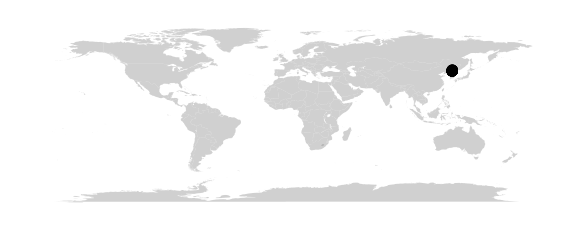
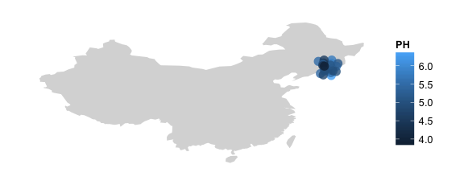
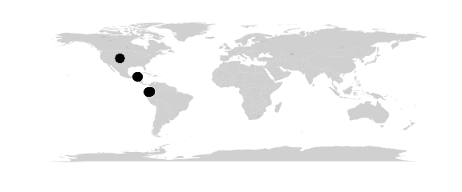
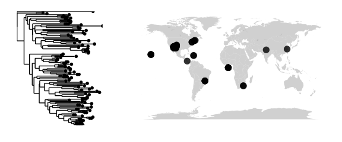
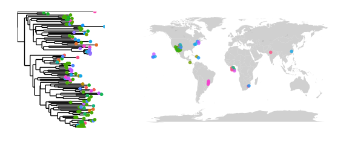
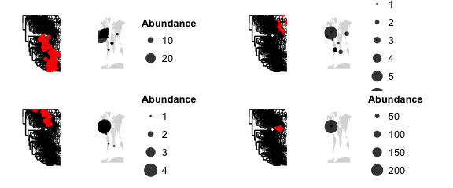

map_phyloseq
map_phyloseq provides a way to quickly look at your data by mapping it. Because no calculations are done to the underlying data, drawing a map using this command is quite quick. The mapping in this command (and all commands) is handled by the map_data function of ggplot. This style of mapping allows zooming in by region using a lookup table of country-names. Other ggplot goodies like coloring by a variable are all available as is a set of convenience functions that allows you to jitter points that are overlapping at the scale you are interested in. Two examples showing how these features can be used to zoom into a region, separate samples and look at the distribution of a variable (“PH”) in the phyloseq sample_data table.
#high level world map
map_phyloseq(mountainsoil)
#zoomed in map, colored by pH and jittered in order to see the points better
map_phyloseq(mountainsoil, region="china", jitter=TRUE, jitter.x=2,jitter.y=2, color="PH")
htmlmap_phyloseq
#interactive map
htmlmap_phyloseq(epoxomicin_KS)htmlmap_phyloseq(epoxomicin_KS, size="Abundance")map_network
The goal of the map_network function is to visualize the relatedness of ecological samples. It does this using the same technique in phyloseq’s plot_net and plot_network functions, namely, it will calculate an ecological distance between samples. Instead of using a network layout algorithm, however, phylogeo will place points by their geographic location. If the points are crowded, they can be jittered to space them apart. A number of configuration options are available to control the appearance of the points and lines.
#simple network map without lines
map_network(batmicrobiome)
#connect samples and visualize connectionsOne current downside to the current mapping setup is that the region keyword only works on country names and cannot zoom to, say “the western hemisphere”. In this example the result is a lot of dead space. For figures you would want to ggsave a PDF/SVG and zoom to your region of interest. Down the line a more nuanced mapping system might be considered.
map_network
#simple network map without lines
htmlmap_network(batmicrobiome)map_tree
The goal of map_tree is to provide access to both phylogenetic and geographic information in one place. To be useful, the data may need to be pared back to relatively small number of OTUs/samples.
#simple map + tree
map_tree(epoxomicin_KS)
#color the map to see locations
map_tree(epoxomicin_KS, color="Geotype", jitter=TRUE, size=2, ladderize=TRUE)
#trim samples and locationsmap_clusters
map_clusters provides a way to explore the spatial distribution of subsets of your data. From your phylogentic tree (required), a distance matrix is used to make a kmeans calculation which will cluster your tree into k number of clusters. The members of these clusters will then be displayed on the map.
#clustered trees plus maps
map_clusters(epoxomicin_KS, clusternum=4)